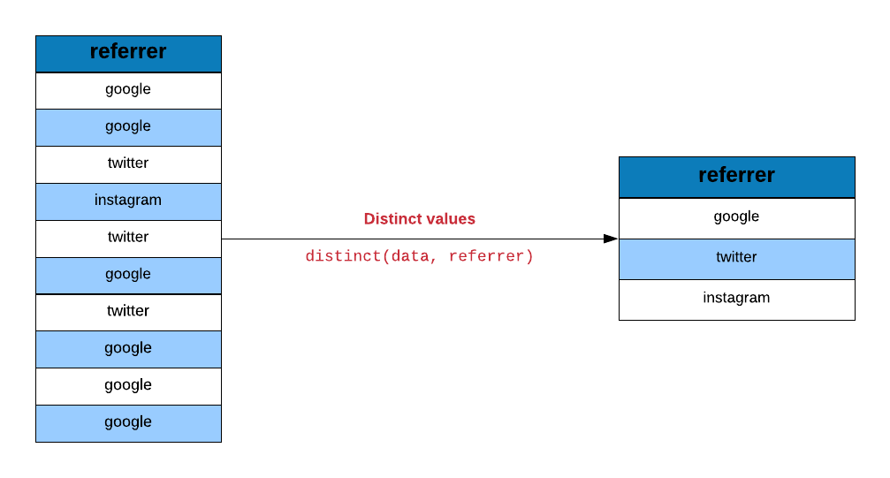
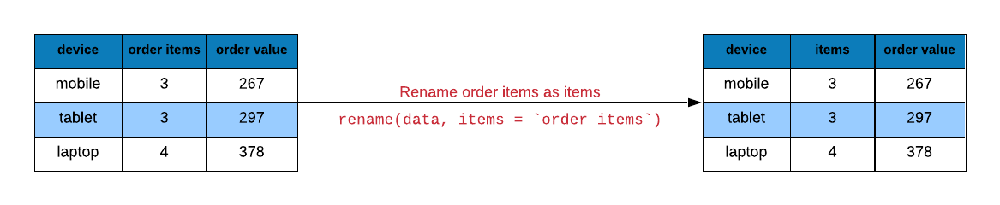
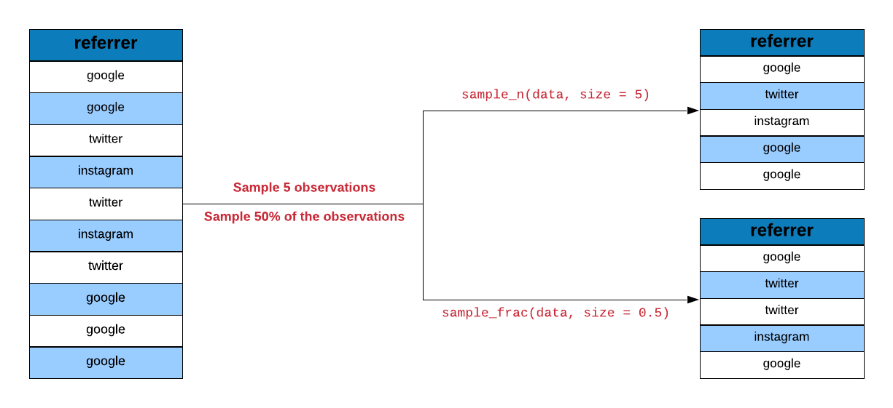
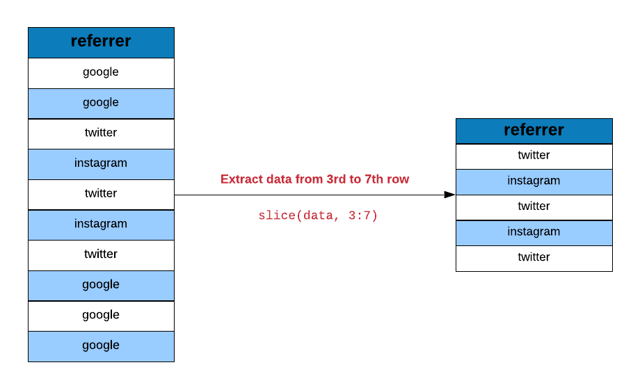

Chapter 5 Data Wrangling - 3
5.1 Introduction
In this chapter, we will explore a set of helper functions in order to:
- extract unique rows
- rename columns
- sample data
- extract columns
- slice rows
- arrange rows
- compare tables
- extract/mutate data using predicate functions
- count observations for different levels of a variable
We will use the following R packages:
library(dplyr)
library(readr)5.2 Case Study
Let us look at a case study (e-commerce data) and see how we can use dplyr helper functions to answer questions we have about and to modify/transform the underlying data set.
5.2.1 Data
ecom <-
read_csv('https://raw.githubusercontent.com/rsquaredacademy/datasets/master/web.csv',
col_types = cols_only(device = col_factor(levels = c("laptop", "tablet", "mobile")),
referrer = col_factor(levels = c("bing", "direct", "social", "yahoo", "google")),
purchase = col_logical(), bouncers = col_logical(), duration = col_double(),
n_visit = col_double(), n_pages = col_double()
)
)
ecom## # A tibble: 1,000 x 7
## referrer device bouncers n_visit n_pages duration purchase
## <fct> <fct> <lgl> <dbl> <dbl> <dbl> <lgl>
## 1 google laptop TRUE 10 1 693 FALSE
## 2 yahoo tablet TRUE 9 1 459 FALSE
## 3 direct laptop TRUE 0 1 996 FALSE
## 4 bing tablet FALSE 3 18 468 TRUE
## 5 yahoo mobile TRUE 9 1 955 FALSE
## 6 yahoo laptop FALSE 5 5 135 FALSE
## 7 yahoo mobile TRUE 10 1 75 FALSE
## 8 direct mobile TRUE 10 1 908 FALSE
## 9 bing mobile FALSE 3 19 209 FALSE
## 10 google mobile TRUE 6 1 208 FALSE
## # ... with 990 more rows5.2.2 Data Dictionary
- referrer: referrer website/search engine
- device: device used to visit the website
- bouncers: whether a visit bounced (exited from landing page)
- duration: time spent on the website (in seconds)
- purchase: whether visitor purchased
- n_visit: number of visits
- n_pages: number of pages visited/browsed
5.3 Data Sanitization
Let us ensure that the data is sanitized by checking the sources of traffic
and devices used to visit the site. We will use distinct to examine the
values in the referrer column

distinct(ecom, referrer)## # A tibble: 5 x 1
## referrer
## <fct>
## 1 google
## 2 yahoo
## 3 direct
## 4 bing
## 5 socialand the device column as well.
distinct(ecom, device)## # A tibble: 3 x 1
## device
## <fct>
## 1 laptop
## 2 tablet
## 3 mobile5.4 Rename Columns
Columns can be renamed using rename().

rename(ecom, time_on_site = duration)## # A tibble: 1,000 x 7
## referrer device bouncers n_visit n_pages time_on_site purchase
## <fct> <fct> <lgl> <dbl> <dbl> <dbl> <lgl>
## 1 google laptop TRUE 10 1 693 FALSE
## 2 yahoo tablet TRUE 9 1 459 FALSE
## 3 direct laptop TRUE 0 1 996 FALSE
## 4 bing tablet FALSE 3 18 468 TRUE
## 5 yahoo mobile TRUE 9 1 955 FALSE
## 6 yahoo laptop FALSE 5 5 135 FALSE
## 7 yahoo mobile TRUE 10 1 75 FALSE
## 8 direct mobile TRUE 10 1 908 FALSE
## 9 bing mobile FALSE 3 19 209 FALSE
## 10 google mobile TRUE 6 1 208 FALSE
## # ... with 990 more rows5.5 Data Tabulation
Let us now look at the proportion or share of visits driven by different sources of traffic.

ecom %>%
group_by(referrer) %>%
tally()## # A tibble: 5 x 2
## referrer n
## <fct> <int>
## 1 bing 194
## 2 direct 191
## 3 social 200
## 4 yahoo 207
## 5 google 208We would also like to know the number of bouncers driven by the different sources of traffic.
ecom %>%
group_by(referrer, bouncers) %>%
tally()## # A tibble: 10 x 3
## # Groups: referrer [5]
## referrer bouncers n
## <fct> <lgl> <int>
## 1 bing FALSE 104
## 2 bing TRUE 90
## 3 direct FALSE 98
## 4 direct TRUE 93
## 5 social FALSE 93
## 6 social TRUE 107
## 7 yahoo FALSE 110
## 8 yahoo TRUE 97
## 9 google FALSE 101
## 10 google TRUE 107Let us look at how many conversions happen across different devices.
ecom %>%
group_by(device, purchase) %>%
tally() %>%
filter(purchase)## # A tibble: 3 x 3
## # Groups: device [3]
## device purchase n
## <fct> <lgl> <int>
## 1 laptop TRUE 31
## 2 tablet TRUE 36
## 3 mobile TRUE 36Another way to extract the above information is by using count
ecom %>%
count(referrer, purchase) %>%
filter(purchase)## # A tibble: 5 x 3
## referrer purchase n
## <fct> <lgl> <int>
## 1 bing TRUE 17
## 2 direct TRUE 25
## 3 social TRUE 20
## 4 yahoo TRUE 22
## 5 google TRUE 195.6 Sampling Data
dplyr offers sampling functions which allow us to specify either the
number or percentage of observations. sample_n() allows sampling a specific
number of observations.

sample_n(ecom, 700)## # A tibble: 700 x 7
## referrer device bouncers n_visit n_pages duration purchase
## <fct> <fct> <lgl> <dbl> <dbl> <dbl> <lgl>
## 1 bing tablet FALSE 5 6 138 FALSE
## 2 google mobile TRUE 6 1 208 FALSE
## 3 social tablet TRUE 4 1 392 FALSE
## 4 yahoo tablet TRUE 6 1 67 FALSE
## 5 social mobile TRUE 1 1 958 FALSE
## 6 google laptop FALSE 2 6 174 FALSE
## 7 yahoo tablet FALSE 2 16 480 TRUE
## 8 bing mobile TRUE 9 1 650 FALSE
## 9 yahoo mobile FALSE 3 20 480 FALSE
## 10 yahoo mobile FALSE 3 11 176 FALSE
## # ... with 690 more rowsWe can combine the sampling functions with other dplyr functions as shown below where we sample observation after grouping them according to the source of traffic.
ecom %>%
group_by(referrer) %>%
sample_n(100)## # A tibble: 500 x 7
## # Groups: referrer [5]
## referrer device bouncers n_visit n_pages duration purchase
## <fct> <fct> <lgl> <dbl> <dbl> <dbl> <lgl>
## 1 bing mobile TRUE 8 1 202 FALSE
## 2 bing laptop TRUE 10 1 777 FALSE
## 3 bing mobile TRUE 10 1 480 FALSE
## 4 bing laptop TRUE 10 1 947 FALSE
## 5 bing tablet FALSE 6 3 54 FALSE
## 6 bing laptop FALSE 4 3 48 FALSE
## 7 bing tablet TRUE 4 1 493 FALSE
## 8 bing laptop TRUE 8 1 585 FALSE
## 9 bing tablet FALSE 3 15 390 TRUE
## 10 bing tablet FALSE 3 15 195 FALSE
## # ... with 490 more rowssample_frac() allows a specific percentage of observations.
sample_frac(ecom, size = 0.7)## # A tibble: 700 x 7
## referrer device bouncers n_visit n_pages duration purchase
## <fct> <fct> <lgl> <dbl> <dbl> <dbl> <lgl>
## 1 yahoo tablet TRUE 5 1 10 FALSE
## 2 social mobile FALSE 7 16 352 TRUE
## 3 bing tablet FALSE 4 15 435 TRUE
## 4 yahoo mobile TRUE 7 1 561 FALSE
## 5 social mobile TRUE 10 1 463 FALSE
## 6 social laptop TRUE 7 1 991 FALSE
## 7 direct tablet TRUE 4 1 141 FALSE
## 8 direct tablet TRUE 2 1 891 FALSE
## 9 google tablet FALSE 1 12 216 FALSE
## 10 google laptop FALSE 6 13 325 TRUE
## # ... with 690 more rows5.7 Data Extraction
In the first chapter, we had observed that dplyr verbs always returned a tibble. What if you want to extract a specific column or a bunch of rows but not as a tibble?
Use pull to extract columns either by name or position. It will return a
vector. In the below example, we extract the device column as a vector. I am
using head in addition to limit the output printed.
5.7.1 Sample Data
ecom_mini <- sample_n(ecom, size = 10)
pull(ecom_mini, device)## [1] mobile mobile laptop laptop tablet mobile tablet mobile tablet tablet
## Levels: laptop tablet mobileLet us extract the first column from ecom using column position instead of
name.
pull(ecom_mini, 1) ## [1] yahoo social social yahoo yahoo yahoo social yahoo google social
## Levels: bing direct social yahoo googleYou can use - before the column position to indicate the position in reverse.
The below example extracts data from the last column.
pull(ecom_mini, -1) ## [1] FALSE TRUE FALSE FALSE FALSE FALSE FALSE FALSE TRUE TRUELet us now look at extracting rows using slice(). In the below example, we
extract data starting from the 5th row and upto the 15th row.

slice(ecom, 5:15)## # A tibble: 11 x 7
## referrer device bouncers n_visit n_pages duration purchase
## <fct> <fct> <lgl> <dbl> <dbl> <dbl> <lgl>
## 1 yahoo mobile TRUE 9 1 955 FALSE
## 2 yahoo laptop FALSE 5 5 135 FALSE
## 3 yahoo mobile TRUE 10 1 75 FALSE
## 4 direct mobile TRUE 10 1 908 FALSE
## 5 bing mobile FALSE 3 19 209 FALSE
## 6 google mobile TRUE 6 1 208 FALSE
## 7 direct laptop TRUE 9 1 738 FALSE
## 8 direct tablet FALSE 6 12 132 FALSE
## 9 direct mobile FALSE 9 14 406 TRUE
## 10 yahoo tablet FALSE 5 8 80 FALSE
## 11 yahoo mobile FALSE 7 1 19 FALSEUse n() inside slice() to extract the last row.
slice(ecom, n())## # A tibble: 1 x 7
## referrer device bouncers n_visit n_pages duration purchase
## <fct> <fct> <lgl> <dbl> <dbl> <dbl> <lgl>
## 1 google mobile TRUE 9 1 269 FALSE5.8 Between
between() allows us to test if the values in a column lie between two specific
values. In the below example, we check how many visits browsed pages between 5
and 15.
ecom_sample <- sample_n(ecom, 30)
ecom_sample %>%
pull(n_pages) %>%
between(5, 15) ## [1] FALSE FALSE FALSE TRUE TRUE TRUE FALSE FALSE FALSE FALSE FALSE FALSE
## [13] FALSE TRUE FALSE FALSE FALSE TRUE FALSE FALSE TRUE TRUE FALSE FALSE
## [25] TRUE FALSE FALSE FALSE FALSE FALSE5.9 Case When
case_when() is an alternative to if else. It allows us to lay down the
conditions clearly and makes the code more readable. In the below example, we
create a new column repeat_visit from n_visit (the number of previous visits).
ecom %>%
mutate(
repeat_visit = case_when(
n_visit > 0 ~ TRUE,
TRUE ~ FALSE
)
) %>%
select(n_visit, repeat_visit) ## # A tibble: 1,000 x 2
## n_visit repeat_visit
## <dbl> <lgl>
## 1 10 TRUE
## 2 9 TRUE
## 3 0 FALSE
## 4 3 TRUE
## 5 9 TRUE
## 6 5 TRUE
## 7 10 TRUE
## 8 10 TRUE
## 9 3 TRUE
## 10 6 TRUE
## # ... with 990 more rows